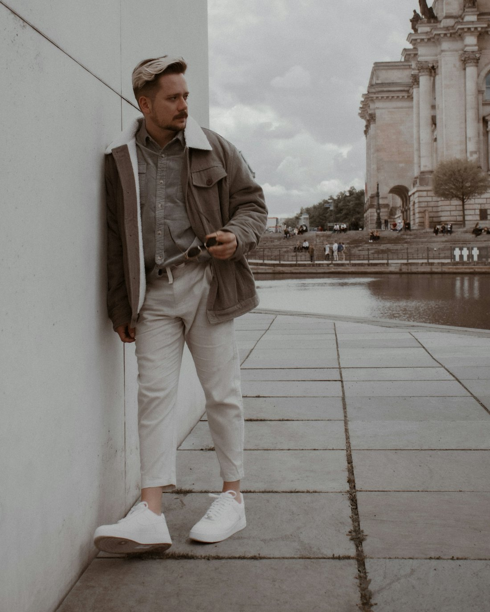
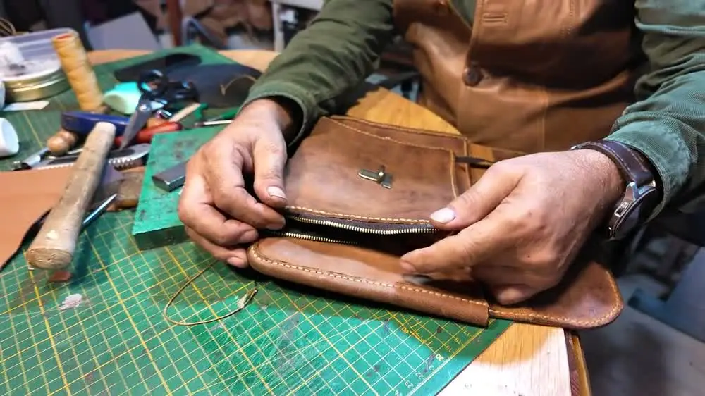
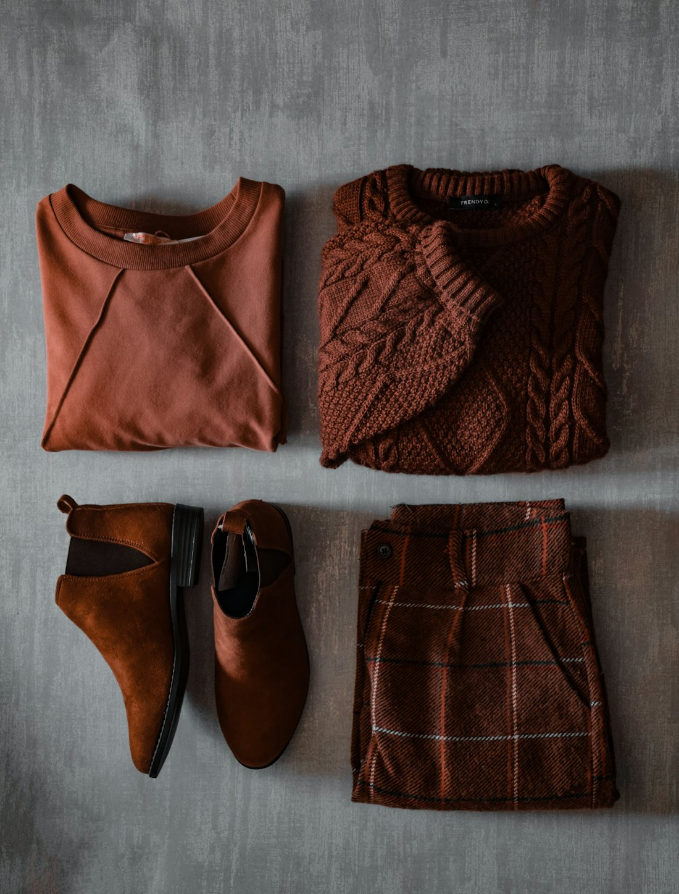

Northlane, Autumn / Winter 2026

Cover story
One jacket, taken apart.
- The Harbor Jacket
New this season, and the piece we are asked about most. Before the price, here is everything that goes into one.
- Twenty-four pieces
Thirteen you can see here and eleven you can’t: pocket bags, facings and the lining. All of them are cut by hand at the Jaipur studio, forty jackets to a run.
- The cloth
Organic cotton twill, woven tight and waxed, so a shower runs off it. The rust is dyed after weaving. That is why the colour deepens where you wear it most.
- The rib
Collar, cuffs and hem are knitted to size, not cut from a roll. A knitted edge can’t fray, and it keeps its spring long after a cut one has gone slack.
- Zips and label
Solid brass zips that dull to the colour of an old coin. Under the collar, a woven label with the run number and the initials of the tailor who made yours.
- Sewn by one person
One tailor takes a jacket from the first seam to the last. Forty-one seams, basted in white thread and then stitched: about three hours forty at the machine.
- ACollarRib knit1
- BFrontsCotton twill2
- CBackCotton twill1
- DSleevesCotton twill2
- ECuffsRib knit2
- FHemRib knit2
- GZipsBrass2
- HLabelWoven1
 AH
AH B
B

 F
F
 D
D E
E
₹8,900, and where it goes.
Every price on this site includes GST. For the cover piece of each issue we print the rest of the sum as well.
- Cloth and trims₹2,310
- Cutting and sewing₹2,180
- Finishing, checks and packing₹520
- Delivery and returns₹430
- The studio: design, fittings, photographs, people₹1,180
- GST₹1,358
- What we keep₹922
06 Cover story
12 Northlane · AW26
The Autumn Edit 13


Soft tailoring, warm neutrals.
We make a small number of things in honest materials, and we make them to be worn out slowly.
Relaxed suiting, brushed knits and leather that ages with you. Twelve pieces that work together, made in small runs in family workshops.
Shop the editShop the page
Leather that softens. Cotton that holds its shape. Knits you’ll still be wearing in ten years.
Lookbook
Autumn / Winter 2026 · drag to turn the page




28 Lookbook

Fewer things, better made.
- Made in
- Three family workshops
- Repairs
- Free for two years
- Materials
- Organic, recycled, vegetable-tanned
40 The workshop
In this issue
See all pieces46 The new arrivals
Notes on craft

Guides · 4 min read
Five pieces, fifteen outfits
How to build a small autumn wardrobe that actually works together.
Read the note
Care · 3 min read
Wash less, wear longer
Simple ways to keep wool and cotton soft for years, not seasons.
Read the note
Makers · 4 min read
Inside the knitting workshop
Meet the family who knit our Rib Knit by hand, twelve at a time.
Read the note
52 Notes
Letters
56 Back page